进插值》的论文。
进插值》的论文。詹姆斯·沃尔什撰写的《十三世纪：最伟大的世纪》于 1907 年出版，这是一部能激起好奇心的历史著作。书中的大部分内容是罗马天主教护教学（沃尔什是美国福特汉姆大学的教授，而福特汉姆大学是纽约市天主教会建立的），但是作者提出了很好的观点，认为 13 世纪的社会进步、文化成就和古典学问复兴被低估了。13 世纪发生了很多事情：宏伟的哥特式大教堂，早期的大学，契马布埃和乔托，圣弗朗西斯和阿奎奈，但丁和《玫瑰传奇》，路易九世、爱德华一世和腓特烈二世，《大宪章》和行会，马可·波罗和鄂多立克（他可能到过中国拉萨）等。比萨的列奥纳多（1170—1250），也就是人们熟知的斐波那契就活跃在这个世纪之初。
由于斐波那契数列 1, 1, 2, 3, 5, 8, 13, 21, 34, 55, 89, 144, 233, 377,…广为人知，因此斐波那契是非数学专业人士最熟悉的数学家的名字之一。
这个数列从第三项开始，每一项都是前两项之和，如 89=34+55。斐波那契数列在非常热门的整数序列在线百科全书中的编号是 A000045。这个数列的数学和科学内涵都非常丰富，以至于有一本专门研究它的学术期刊《斐波那契季刊》。如 2005 年 8 月的《斐波那契季刊》发表了一篇题为《通过超几何函数实现斐波那契数列的
进插值》的论文。
对于非数学专业人士来说，以下公式看起来有点儿令人惊讶，但实际上很容易证明 1
斐波那契数列的第  项恰好是
项恰好是
1
为了证明这个结论，我们令斐波那契数列的第
项为
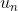
。所以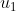
是 1，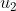
也是 1，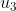
是 2，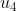
是 3，以此类推。现在，利用这些斐波那契数作为系数构造以下多项式：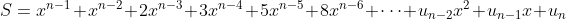
 ，得到
，得到 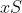
。重复该过程得到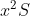
。从 中减去 和 ，根据斐波那契数列的性质，你会看到等式右边的很多项都抵消了。例如，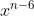
的系数是 21 – 13 - 8 = 0。最后剩下：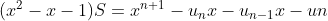
分别是 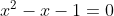
的两个根，这样等式左边为 0，从而得到关于两个未知量 和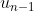
的联立方程组，消掉 之后就得到结果。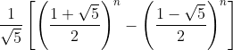
例如，当
等于 4 时，使用二项式定理 2
可以得到：
2 二项式定理给出了
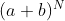
的展开式。在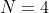
的特殊情况下，可得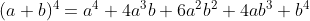
，这就是我在这里使用的公式。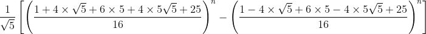
很容易就可以算出这个式子等于 3。
斐波那契数列首次出现在一本名为《计算之书》3 的书中，作者是斐波那契。原文是一个关于兔子数量的问题：
3 根据《科学传记大辞典》中关于斐波那契的介绍，那本书的书名是 Liber abbaci ，而不是通常所写的 Liber abaci ，供严谨的读者参考。书名翻译过来是《计算之书》，而不是《算盘之书》。在意大利语中，书名同歌剧的名字一样，不必每个字母都大写。
假设最初只有一对兔子，如果每一对兔子每个月都会生一对小兔子，而小兔子出生两个月后就可以开始繁殖，假设兔子没有死亡，那么一年内能繁殖多少对兔子？
关于这个问题，我曾经能够想到的唯一办法是将这些月份标记为  、
、 、
、 、
、 ，等等。第一个月，即月份
，这对兔子被记为
。到了第二个月，即月份
，这对兔子
还在，而且还有它们生下的一对兔子
，总共有两对兔子。在第三个月，即月份
，兔子对
生出另一对兔子
，而兔子对
已经存在，但它们还没有开始繁殖，因此共有三对兔子。在第四个月，即月份
，兔子对
又生下一对兔子
。此时，兔子对
也开始生出自己的一对兔子
。兔子对
现在还不能繁殖。于是，
、
、
、
和
是第四个月时的兔子对，一共有五对兔子，以此类推。
，等等。第一个月，即月份
，这对兔子被记为
。到了第二个月，即月份
，这对兔子
还在，而且还有它们生下的一对兔子
，总共有两对兔子。在第三个月，即月份
，兔子对
生出另一对兔子
，而兔子对
已经存在，但它们还没有开始繁殖，因此共有三对兔子。在第四个月，即月份
，兔子对
又生下一对兔子
。此时，兔子对
也开始生出自己的一对兔子
。兔子对
现在还不能繁殖。于是，
、
、
、
和
是第四个月时的兔子对，一共有五对兔子，以此类推。
※※※
在《计算之书》的前言中，作者简要介绍了他当时的生活。那时，“名字加姓氏”的现代姓名在西欧还没有流行起来，所以人们只知道作者是比萨的列奥纳多，有时也称其意大利名列奥纳多·比萨诺。他的家族有自己的名字——波那契（Bonacci），所以他就有了“斐波那契”（fi'Bonacci，波那契之子）的名字，一直沿用到今天。
斐波那契在 1170 年左右出生于比萨 4 ，这是波那契家族的故乡。尽管比萨四周都是日耳曼人建立的帝国（即神圣罗马帝国）的领土，但当时它是一个独立共和国。斐波那契的父亲是这个共和国的一名官员，大约 1192 年，他奉命代表比萨商人与当时位于北非海岸的布吉亚 5 进行贸易往来。不久后他就召来斐波那契与他同行，想把这个年轻人锻炼成一名商人。
4 也就是说，斐波那契出生于著名的比萨斜塔开建前的一两年内。比萨斜塔始建于 1173 年，耗时 180 年建成，它在刚建到第三层时就已经倾斜得很明显了。
5 这座城市是现在阿尔及利亚的贝贾亚市，在阿尔及尔以东约 120 英里。
布吉亚包括北非的一部分和西班牙南部三分之一的领土，当时正处于穆瓦希德王朝（也称为阿尔摩哈德王朝）的统治之下，这个王朝建都于马拉喀什。因此，年轻的斐波那契在一个大型阿拉伯城市里受到各种知识的熏陶，可能接触过中世纪阿拉伯数学家如花拉子密和海亚姆等人的著作。不久，斐波那契的父亲派他踏上商业旅途，其足迹遍布地中海沿岸，包括埃及、叙利亚、西西里（在 1194 年以前一直是诺曼王朝，之后德国的霍亨斯陶芬王朝继承了它）、法国和拜占庭等。
很多来自意大利贸易城市的其他年轻人肯定也加入了这种旅途。然而，斐波那契天生就是一名数学家，在旅途中，他从拜占庭的希腊人和阿拉伯人那里汲取了他们的知识精华，并且通过阿拉伯人学习了很多波斯、印度和中国的知识。1200 年左右，当他返回比萨准备永久定居时，他可能比西欧的任何人——甚至是世界上的任何人——都更了解当时的算术和代数。
※※※
按照当时的标准，《计算之书》包含了极为创新的思想，并产生了深远的影响。在此后的 300 年间，它一直是自古代世界结束以来最好的一本数学教材。人们通常认为，包括 0 在内的阿拉伯数字（即印度数字）是通过那本书传到西方的。事实上，该书的开篇是这样写的：
印度数字一共有 9 个：9、8、7、6、5、4、3、2、1。使用这 9 个数字和阿拉伯语中称为“zephirum”的符号 0 可以表示任何数字，下面将展示这一点。
该书共有 15 章，前 7 章的内容是使用这些“新”数字符号说明计算的入门知识，同时附有大量实例；其余部分是算术、代数和几何问题集，其中有商人和工匠感兴趣的问题，还有一些轻松愉快的游戏问题，类似前面我们讲过的兔子数量问题，该问题出现在书中的第 12 章。
尽管《计算之书》在算术和历史方面都很引人注目，但它不是斐波那契最具代数 意义的著作。他的后来的两本著作充分展示了他的代数才华，这两本书可能都写于 1225 年。我只挑选第一本来讲，因为它引出了本章讨论的主题：三次方程。
※※※
1225 年左右，神圣罗马帝国皇帝把宫廷设在比萨。这位皇帝就是腓特烈二世，他是那个时代最具魅力的人物之一，有时也被称为欧洲王座上的第一个近代人。史蒂文·朗西曼在其著作中很好地简述了腓特烈二世的性格。腓特烈二世很享受被教皇两次逐出教会的独特经历（人们不得不认为他确实很享受），这是当时教皇与皇帝之间权力博弈的一部分。从那时起，他就一直不受罗马天主教徒的欢迎。在上文中提到的沃尔什教授对 13 世纪的赞歌中，那个世纪最聪明、最有教养的统治者之一腓特烈二世只被提及了一次。
到了这个时候，斐波那契的数学才华在比萨很有名，他还与腓特烈二世宫廷里的一些学者保持着友好的关系。所以，当腓特烈二世来到比萨时，斐波那契得到了他的接见。
腓特烈二世的宫廷里有一个叫巴勒莫的约翰内斯的人，我没有找到太多关于这个人的介绍。某一份文献说他是一位马拉诺人，也就是说，他是一位改信基督教的西班牙犹太人。不管怎样，约翰内斯似乎对数学很了解，所以腓特烈二世要他给斐波那契出一些问题，来测试一下斐波那契的才华。
其中一个问题是求解三次方程
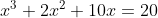
。我不知道斐波那契是否当场解决了这个问题。无论如何，他确实把这个问题写进了在 1225 年出版的一本书中，那本书有一个很长的拉丁文书名，通常被简称为《花》（Flos ）6 。这个方程的实数解是 1.368 808 107 821 372 6...。斐波那契给出的解非常接近这个数，只是小数点后第 11 位错了。6 “Flos”在拉丁文中的意思是“花”，比喻杰出的作品。
我们不知道斐波那契是如何得到这个结果的，他没有告诉我们所使用的方法。也许他使用了几何方法，类似于海亚姆为了达到相同的目的而使用的相交曲线的几何方法。关于他对这个三次方程的处理，值得注意的并不是他得到的解，而是他的分析过程。通过严谨、细致的推理，他首先表明这个解不可能是一个整数，然后他又发现这个解也不可能是一个有理数。之后他证明这个解不可能是某个数的平方根，也不可能是有理数和平方根的任何组合。这种对三次方程的分析是中世纪代数的杰作 。该分析过程关注解的性质 而不是解的实际值，可以说它预见了 600 年后在思考方程解的过程中将发生的一场伟大变革，我将在适当的时候介绍那场变革。
※※※
斐波那契没有用我们熟悉的十进制数来表示那个三次方程的解，而是类似古巴比伦人那样用六十进制数来表示，如
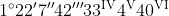
，这表示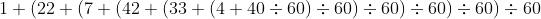
计算结果是 1.368 808 107 853 223 5...。前面说过，这个数到小数点后第 10 位都是正确的。事实上，中世纪后期代数学发展的最大障碍是缺少书写数字、未知量和算术运算的好方法。斐波那契在欧洲普及印度–阿拉伯数字是一个伟大的进步，但是只有将十进制应用于数字的小数部分时才算是真正的进步，所以说第一次“数字变革”是不彻底的。
对于表示未知量及其幂，情况更为糟糕。抛开纯几何表示，正如我之前说的，阿拉伯代数学家用文字说明一切，通常用阿拉伯文单词“shai”（事物）或“jizr”（根）来表示未知量，而用“mal”（财产或财富）表示未知量的平方，用“kab”（立方体）表示未知量的立方，用组合的形式表示更高次幂，如“mal-kab-shai”表示五次幂，等等。丢番图的更快捷的记法保存在君士坦丁堡的希腊图书馆里 7 ，但是阿拉伯世界和西方基督教世界的数学家们似乎不了解这些，或者觉得没有了解的必要。
7 学术政治家米海尔·普塞洛斯曾经服务于拜占庭帝国，他是米海尔七世在位时（1071—1078）的大臣。他肯定知晓丢番图的字母符号体系。
像斐波那契这样的早期意大利代数学家向阿拉伯人学习，把他们的文字翻译成拉丁文或意大利文：“radix”表示根，“res”“causa”或“cosa”表示事物，“census”表示财产，“cubus”表示立方。到了 14 世纪末，后三个词分别简写成“co”“ce”和“cu”，这种写法上的进步是一位名叫卢卡·帕乔利（1445—1517）的意大利人在 1494 年出版的一部著作中系统提出的，这部著作通常被称为帕乔利的《数学大全》8
。帕乔利的记法比丢番图的
、 和
和
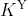
的使用范围更为广泛，但是缺乏想象力。尽管《数学大全》中原创的东西很少，但事实证明，它对从事商业计算的人来说非常方便，并且一直深受欢迎。帕乔利被认为是复式簿记之父 9 。8 该书的全名是《算术、几何、比及比例概要》。顺便提一下，我们已经来到了欧洲的印刷时代。帕乔利的著作在威尼斯印刷出版，是首批在欧洲印刷的数学著作。
9 帕乔利后来的一本著作因为达·芬奇为其插图而赢得了相当高的声誉。达·芬奇和帕乔利是好朋友。帕乔利的另一个出名之处是他创造了单词“million”（百万）。
※※※
我在前面很快跳过了 269 年，没有介绍其间发生的故事。一方面，从某种程度上说，这是我作为作者的特权：我想讲讲一般三次方程的解法，然后介绍卡尔达诺，他是本书中第一位有血有肉的人物。另一方面，在斐波那契与帕乔利中间这段时间里的确 没有发生什么值得注意的事。
在 13 世纪、14 世纪和 15 世纪早期，确实有几位专业的代数学家。很多更专业的代数学历史中列出了他们的一些贡献。例如，范德瓦尔登用了近 6 页篇幅介绍比萨的马埃斯特罗·达尔迪，他在 14 世纪中期研究了二次方程、三次方程和四次方程，把它们分成 198 种类型，并用巧妙的方法解决了某些特殊类型的方程的求解。
尽管这位专家值得关注，但一些次要人物对我们关于代数学的理解帮助不大。直到 15 世纪后半叶，印刷书籍的普及才加快了代数学的发展。
这些进展并非只发生在意大利。1484 年，法国人尼古拉斯·许凯（1445—1488）写出了《算术三编》手稿（但直到 1880 年才得以出版），他引入了未知量的幂的上标记法（不过他的记法不完全是现代形式：他使用
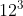
表示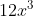
），并把负数看作实体。1486 年，德国人约翰内斯·威德曼（1462—1498）在德国莱比锡大学开设了第一门代数课，他在 1489 年出版的一本书中首次使用了现代加号和减号 10 。10 在意大利文中，“加”和“减”分别为“piu”和“meno”。后来就像未知量的幂一样，这些符号都经过了简写，一般写成“p.”和“m.”。
许凯的上标记号很少被注意到，除此之外，其他著作仍然使用中世纪末对未知量及其幂的记法，在法文中未知量写成“chose”，在德文中写成“coss”11 。在 1540 年前后发现一般三次方程的解之前，没有什么值得一提的重要发现。下面我就介绍 1540 年前后那段引人入胜的往事。
11 事实上，15 世纪和 16 世纪的德国代数学家被称为“Cossists”，而代数被称为“the Cossick art”。1577 年，英国数学家罗伯特·雷科德出版了一本书，书名是《砺智石：算术第二部分，包括开方及方程法则的代数应用》。这是最早的使用现代等号的印刷著作。
※※※
这段故事的核心人物是吉罗拉莫·卡尔达诺（1501—1576）。他 1501 年出生于帕维亚，1576 年在罗马去世，一生中的大部分时间是在米兰和米兰附近度过的，他把米兰当作自己的故乡。
卡尔达诺是一位传奇人物，我们现在可能会说他“惹人厌”。他的传记有好几部，第一部是他自己写的《我的一生》（De Propria Vita ），那本书是他在临终前所著。这本自传里有一份他的著作列表，长达好几页。他总计有 131 本印刷出版的著作，还有 111 本未出版的手稿，以及 170 份据他称因为自己不满意而销毁的手稿。
他的许多著作都是全欧洲的畅销书。例如，他写的《安慰》在 1573 年首次被翻译成英文，这是一本劝慰悲伤的著作，莎士比亚曾经读过那本书。哈姆雷特著名的“生存还是毁灭”的独白表达的情绪与《安慰》中关于睡眠的评述非常类似。当哈姆雷特在舞台上说独白时，通常拿的可能就是那本书。
医学是卡尔达诺的首要和主要兴趣，也是他谋生的手段。他最早出版的著作也是医学著作，主要介绍了一些治疗常识，并嘲讽了当时奇怪而有害的医疗行为（卡尔达诺声称自己花了不到两周就写完了那本书）。50 岁时，他已成为继安德烈·维萨里（1514—1564）之后欧洲第二知名的医生。当时的上流社会，无论是普通人还是牧师，都求他看病。然而，他似乎不愿意远行，只有一次远赴苏格兰（1552 年），去治疗苏格兰罗马天主教的最后一位大主教约翰·汉密尔顿的哮喘。卡尔达诺被支付的酬金是 200 金克朗 12 。这次治疗应该非常成功，因为汉密尔顿一直活到 1571 年，他因为参与谋杀苏格兰玛丽女王的丈夫达恩利勋爵而被吊死在斯特灵的露天绞刑架上，死时身穿主教祭服。
12 原书作者误写为 2000 金克朗。卡尔达诺的自传中记录了这笔酬金为 200 金克朗。——译者注
在版权法出现之前，写书，哪怕是写畅销书也不是致富之道，最多算是以间接方式宣传自己的手段。卡尔达诺的次要收入来源是赌博和占卜。在从苏格兰出发经伦敦回家的途中，卡尔达诺给少年国王爱德华六世（亨利八世的儿子）占卜，预言他只要躲过 23 岁、34 岁和 55 岁的病魔即可长寿。但不幸的是，爱德华在不到一年后就夭亡了，年仅 16 岁。卡尔达诺还关注其他形式的预言。他甚至声称自己发明了一种“相面术”，能根据面部缺陷读出人的性格和命运。他在关于这个话题的一本书中写道：“如果一个女人的左脸颊的酒窝左边一点长有疣，那么她最终会被丈夫毒死。”
卡尔达诺对赌博的痴迷可能到了上瘾的程度，这种上瘾本会毁了他，然而事实上，他是一个善于分析的敏锐棋手（那时候下国际象棋一般都是为了赚钱），而且是熟知数学概率的高手。他写了一本关于赌博的书——《机遇博弈》（Liber de ludo aleae ）13 ，其中就有对骰子和纸牌游戏的详细数学分析。
13 那本书在卡尔达诺去世后才出版。该书的英文版作为附录包含在厄于斯泰因·奥雷（1899—1968）为卡尔达诺写的传记中。
卡尔达诺秉承真正的文艺复兴精神，在实践科学和理论科学方面取得了卓越的成就。他的著作中包含丰富的仪器、机械装置的设计图以及打捞沉船和测量距离的方法。1548 年，当神圣罗马帝国皇帝查理五世来到米兰时，卡尔达诺为皇帝的马车设计了一个减震的悬架装置，因此他在皇帝游行的队伍中得到了一个特别的位置。（这位皇帝患有严重的痛风，不喜欢旅行，这对一个把欧洲领土从大西洋扩展到波罗的海的男人来说真是一件不幸的事。14 ）如今汽车上使用的万向节在法语和德语中仍然以卡尔达诺的名字命名，分别是“le cardan”（法语）和“das Kardangelenk”（德语）。
14 查理五世是威尔第的歌剧《唐·卡洛》中的幽灵僧侣。顺便提一下，神圣罗马帝国皇帝的头衔是选举产生的。为了顺利得到它，查理五世花费了近一百万达克特去贿赂选民。他是由罗马教皇加冕（1530 年 2 月在意大利博洛尼亚）的最后一位皇帝。大部分同时代的人认为他是西班牙国王（他是第一位名叫查理的罗马国王，因此有时人们会将他与西班牙的查理一世混淆），尽管他在受制于西班牙的佛兰德斯长大，但他的西班牙语说得很差。
卡尔达诺一生中的最低谷是在他的儿子詹巴蒂斯塔被处死时。卡尔达诺非常喜欢这个儿子，并对他寄予厚望。这个男孩爱上了一个不值得被爱的女人，并与她结了婚。这个女人生了三个孩子后，嘲讽詹巴蒂斯塔说这三个孩子都不是他的。于是詹巴蒂斯塔用砒霜将其毒死，他很快就被捕了，而且在处死之前被折磨致残，死时还不到 26 岁。在卡尔达诺余生的 16 年里，这件可怕的事一直折磨着他。后来，在他生命的最后阶段，他自己也因为异端邪说而被反宗教改革权威抓进监狱。我们不知道这些人对卡尔达诺的指控是什么，他没有在自传中写下这些内容，很可能他被要求发誓保持沉默。被关押在监狱中几个月后，他被释放出来，软禁在家，并被禁止再公开演讲或出版著作。
尽管他的一生经历了种种奇遇和不幸，但卡尔达诺还是在床上安详地离开了人世，那一天是 1576 年 9 月 20 日，卡尔达诺享年 75 岁。这个日期与他几年前为自己占星预测出的去世日期完全吻合。有人说他是服毒自杀或者绝食而死的，只是为了保证去世日期与他自己的预言吻合。根据他的性格，这是有可能的。
※※※
卡尔达诺在代数学的历史上留下的伟大成就是他的著作《大术，或论代数法则》（Artis magnae sive de regulis algebraicis liber unus ）。该书包含了三次方程和四次方程的一般解法，它也是数学文献中第一次严肃地提出了复数。该书通常被称为《大术》，1545 年在德国纽伦堡首次出版。
卢卡·帕乔利在《数学大全》中曾经列出两类可能没有解的三次方程：
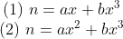
这两类方程分别是“未知量与一个立方之和等于一个数”和“未知量的一个平方与一个立方之和等于一个数”。帕乔利未列出的第三类可能没有解（我不知道他为什么没有列出）的方程是“未知量加上一个数等于一个立方”：
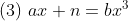
对于现代的我们来说，第三类方程与第一类方程是一样的，这是因为我们使用了负数。在卡尔达诺的时代，人们刚刚知道负数是独立存在的。
在 16 世纪初的某个时刻，一个名叫希皮奥内·德尔·费罗（约 1465—1526）的人发现了上面第一类三次方程的一般解法。费罗是意大利博洛尼亚大学的数学教授，生活在大约 1465 ～ 1526 年。我们不清楚他得到这个解法的确切时间，也不知道他是否还解出了第二类三次方程。他从未发表过他的解法。
在费罗去世之前，他把求解“未知量加上一个立方等于一个数”的秘密告诉了他的学生，一个名叫安东尼奥·马里亚·菲奥雷的威尼斯人。于是这个卑鄙的家伙就作为一个平庸的数学家出现在所有的历史书中。我并不怀疑历史学家们的判断，但是在如此重大的关键代数事件中，把他这个传播者混在数学家之列，对菲奥雷来说似乎是一件不幸的事，以至于他给后世留下的印象就是其数学才能非常平庸。总之，在得到“未知量加上一个立方等于一个数”的解法这个秘密之后，菲奥雷决定利用它赚些钱。在当时知识竞技非常活跃的意大利北部地区，做到这一点并不困难。那时的学者面临的境况是很难得到资助，大学职位的薪水不太理想，而且也没有终身教职制度。一个学者为了谋生必须宣传自己，比如与其他学者公开进行数学竞赛。如果竞赛获胜的奖金越多，宣传效果就越好。
有一位数学家在这样的公开竞赛中赢得了声誉，他就是尼科洛·塔尔塔利亚（1499—1557），威尼斯的一名教师。塔尔塔利亚来自威尼斯以西 100 英里的布雷西亚。当他 13 岁时，一支法国军队洗劫了布雷西亚。虽然塔尔塔利亚得以幸存，但是他的下颌却受了重伤，遗留下口吃的毛病。他的姓“塔尔塔利亚”的意思就是“口吃的人”。在那个时代，一个人的姓氏取决于居住地、父亲的姓名或绰号。塔尔塔利亚是有一定建树的数学家，他著有一本书，讲述了有关火炮的数学，他也是第一个把欧几里得《几何原本》翻译成意大利文的人。
1530 年，塔尔塔利亚和布雷西亚的一个当地人交流了一些关于三次方程的看法，这个人叫祖安尼·托尼尼·达科伊，他在镇子上教数学。在交流过程中，塔尔塔利亚声称自己已经发现了第二类三次方程的一般解法，不过他承认自己还不会解第一类三次方程。
数学庸才菲奥雷不知从哪里听说了他们之间的交流和塔尔塔利亚的声言。他可能觉得塔尔塔利亚是在虚张声势，也可能认为自己是唯一一个知道如何求解第一类三次方程（这个秘密是费罗告诉他的）的人，所以他向塔尔塔利亚发出了挑战。竞赛中每个人都要向对方提出 30 个问题，并在 1535 年 2 月 22 日将对方提出的 30 个问题的答案递交给公证人。输家要宴请赢家 30 次。
由于没有重视菲奥雷的数学才华，因此塔尔塔利亚最初没有费心去准备这次竞赛。但是有传言说，尽管菲奥雷不是伟大的数学家，但他在 10 年前从一位已故数学大师那里学到了求解“未知量加上一个立方等于一个数”的秘密。这时塔尔塔利亚才开始上心，他倾注了全部才能去寻找第一类三次方程的一般解法。1535 年 2 月 13 日星期六凌晨，塔尔塔利亚得到了解法。正如他推测的那样，菲奥雷提出的全都是第一类三次方程的问题，这就是菲奥雷的全部能力。
塔尔塔利亚提出的问题（我们只知道其中的前 4 个问题）似乎是第二类方程和第三类方程的混合。很明显，此时塔尔塔利亚已经掌握了只有一个实数解的任意类型的三次方程，也就是那些判别式为正的三次方程。判别式为负的三次方程（从而有 3 个实数解）只能用复数来求解，当时人们还没有发现复数。
总之，塔尔塔利亚能够解出菲奥雷提出的所有问题，但菲奥雷却解不出塔尔塔利亚提出的任何一个问题。塔尔塔利亚接受了荣誉，但放弃了赢得的赌金。一本关于卡尔达诺的传记 15 中评论道：“要在 30 次宴会上与一个可怜的失败者面对面进餐对他来说没有任何吸引力。”
15 指厄于斯泰因·奥雷为卡尔达诺写的传记《卡尔达诺：赌博学者》（Cardano, the Gambling Scholar ，1953 年出版）。顺便提一下，奥雷写的传记是我看过的关于卡尔达诺的传记中可读性最好的长篇记述，但不幸的是那本书早已绝版了。如果想了解卡尔达诺的占星术，可以参阅安东尼·格拉夫顿所著的《卡尔达诺的宇宙》（Cardano's Cosmos ，1999 年出版）。关于卡尔达诺的书很多，传记就至少有三本。
※※※
卡尔达诺从达科伊那里听到了塔尔塔利亚获胜的消息，达科伊就是塔尔塔利亚在 1530 年交流过三次方程的那个同乡。在与塔尔塔利亚交流之后，达科伊搬到了米兰。在意大利北部，数学教师不是很多，于是卡尔达诺聘请达科伊来教他的部分学生。卡尔达诺似乎正是从达科伊那里得知了菲奥雷与塔尔塔利亚竞赛的完整细节，以及塔尔塔利亚与达科伊在五年前的交流情况。当时，卡尔达诺正在写一本书，他预想的书名是《算术、几何和代数之实践》。他也许在想，如果他能得到塔尔塔利亚的关于三次方程的解法，那么它非常适合放进自己的书里。于是他准备从塔尔塔利亚那里套出这个秘密。
两个人之间接下来的交往读起来非常有趣 16 。他们之间的书信往来从 1539 年的一月持续到三月，卡尔达诺就像垂钓大师钓鱼一样戏弄着塔尔塔利亚，从傲慢的讽刺到甜蜜的诱惑，不断变着花样耍他。卡尔达诺抛出的最吸引人的诱饵是把塔尔塔利亚介绍给意大利最有权势的人之一阿方索·达瓦洛斯，他是整个伦巴第大区的长官（仅次于皇帝查理五世），也是驻扎在米兰附近的帝国军队的长官。塔尔塔利亚关于火炮的著作在此之前刚刚出版，卡尔达诺声称自己买了两本，一本留给自己，另外一本送给自己的朋友，也就是这位长官。他的这位长官朋友非常想见那本书的作者（卡尔达诺是这样说的，我们并不知道事情的真相）。
16 奥雷的书中有详细的记载。对于他们之间发生的事情，奥雷用了超过 55 页篇幅来描述，我在这里把这些记述浓缩成几段。奥雷的书值得一读。除此之外，还有一份完整的叙述，不过事件和日期与奥雷的记载（也是我这里使用的）略有不同，请参见马丁·努德高发表于《国家数学杂志》第 13 期（1937~1938）的文章“卡尔达诺 - 塔尔塔利亚之争侧记”（“Sidelights on the Cardan - Tartaglia Controversy”）。该文被美国数学协会在 2004 年出版的著作《福尔摩斯在巴比伦》（Sherlock Holmes in Babylon ）转载。
塔尔塔利亚立即赶到米兰，在卡尔达诺家里住了几天。塔尔塔利亚的举动就如苍蝇直奔蜘蛛网一样。不巧的是，这位长官当时没在米兰。卡尔达诺热情款待了他的客人，在 1539 年 3 月 25 日，塔尔塔利亚最终说出了求解“未知量加上一个立方等于一个数”的秘密。但塔尔塔利亚坚持让卡尔达诺发誓绝不泄露这个秘密。卡尔达诺按照约定起誓，塔尔塔利亚就用 25 行诗的形式写下了三次方程的解法。这首诗的开头是这样的：
Quando che'l cubo con le cose appresso
Se agguaglia a qualche numero discreto…
（当一个立方和一个未知量加在一起
等于某个整数时……）
根据塔尔塔利亚的自述，他刚离开卡尔达诺家就后悔了。之后他回到威尼斯的家中反思。卡尔达诺写信给塔尔塔利亚询问这首诗中某些地方的解释，但是塔尔塔利亚的回复非常无礼。卡尔达诺的算术书在 1539 年 5 月出版，其中并没有介绍三次方程的解法，此时塔尔塔利亚的怒气有所缓和。但是，那年夏天，他听说卡尔达诺又开始写另外一本专门研究代数的书。之后一直到 1540 年，二人的交锋演变成一边是塔尔塔利亚对卡尔达诺的怀疑和愤怒，一边是卡尔达诺对塔尔塔利亚的奉承和安慰。
《大术》在 1545 年出版。从 1540 年初两人的最后一次通信到 1545 年《大术》出版，之间的这五年在代数学历史上是至关重要的。卡尔达诺在得到“未知量加上一个立方等于一个数”的秘密之后，进一步给出了三次方程的一般解法。
通过研究不可约情形，他发现三次方程总存在三个解。为了解决这个问题，他必须使用复数。卡尔达诺带着疑惑和犹豫这样做了，对此我们不应感到惊讶。在当时，人们甚至觉得负数都有点儿神秘，虚数和复数就显得更加不可思议了（直到今天，许多人仍会这样认为）。
下面是《大术》第 37 章中的内容，考虑的是二次方程而不是三次方程：把 10 分成两部分，使其乘积等于 40。
无须考虑太多，将
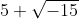
乘以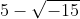
，得到 25-(-15)，后面一项实际上就是 +15。因此乘积是 40……这实在是太神奇了……
这的确非常神奇。为了取得这样的突破，卡尔达诺一定花费了很多功夫。他也想到了其他方向。他找到了求近似解的数值方法，并对根与系数之间的关系形成了一些想法，在这方面瞥见了数学家们在此 150 年后才开始探索的领域。
卡尔达诺有一位助手。回到 1536 年，他雇用了一个名叫洛多维科·费拉里（1522—1565）的十四岁男孩作为他的仆人。他发现这个男孩非常聪明，会阅读和书写，因此就把这个男孩提拔为自己的私人秘书。费拉里通过校对 1540 年的算术书手稿来学习数学。我们可以认为，卡尔达诺在研究三次方程时一定与这位年轻的秘书分享过自己的探索过程。
我们可以这样认为的一个原因，就是费拉里在 1540 年发现了一般四次方程的解法，正如我在“数学基础知识：三次方程和四次方程”中提到的那样，这一过程中包含求解三次方程。因此，只有先会解三次方程，费拉里才能得出四次方程的解。三次方程的解法是他从卡尔达诺那里学会的，而卡尔达诺之前曾向塔尔塔利亚发誓绝不会泄露这个秘密。
另外，在 1526 年费罗去世以及 1535 年菲奥雷与塔尔塔利亚竞赛之后的那些年里，一直有传言说菲奥雷从已故的费罗那里得到了“未知量加上一个立方等于一个数”的解法。1543 年，卡尔达诺和他的秘书费拉里发现了一个可以脱离道德困境的办法，他们前往博洛尼亚，与费罗在大学的继任者交谈，费罗的继任者也是费罗的女婿和论文保管人。卡尔达诺和费拉里在仔细翻阅这些论文之后，了解到塔尔塔利亚并不是第一个解决“未知量加上一个立方等于一个数”问题的人。这为他们提供了道义上的可乘之机，接下来，卡尔达诺在《大术》里给出了三次方程和四次方程的完整解法。他认为费罗首次发现了“未知量加上一个立方等于一个数”的一个解，而塔尔塔利亚只是重新发现了它而已。
塔尔塔利亚当然非常愤怒，他在 1540~1545 年花了五年的时间静静地翻译欧几里得和阿基米德的著作，随后开始了持续三年的指责与争执，虽然卡尔达诺没有参与，但费拉里一直在维护卡尔达诺。直到 1548 年 8 月 10 日，塔尔塔利亚与费拉里在米兰进行了一场学术挑战赛，这场骂战才结束。我们只有一份简要记录，疑为塔尔塔利亚的笔述，从中可以看出塔尔塔利亚在这场竞赛中输得很惨。
塔尔塔利亚死于 1557 年，带着愤怒和痛苦离开人世。他从未发表过自己得到的三次方程的解法，人们也没有在他的论文中找到未发表的版本。当然，毫无疑问，他独立解决了“未知量加上一个立方等于一个数”问题，但是这个荣誉却被首先解出某一种三次方程的费罗和掌握了全部三次方程解法且成为四次方程求解公式之父的卡尔达诺平分了。